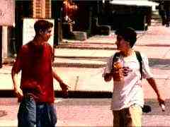

|
Kids/B,B |
|
Trimark/1996/102m/WS 1.85, PS 1.33 |
Almost a documentary in style, Kids could be called "Looking for Telly." He's the kid who has the magic touch in bedding down all the young girls and much of the action is framed around one of the girls looking for Telly. The first half of Kids features a lot of what appears to be hand-held camera work, emphasizing the cinema-verite roots of the film. Not my favorite cinematography, but it is effective in conveying a raw feeling, and Kids is raw if anything. Frightening in its casual depiction of these New York kids and their blatant disrespect for their own lives, Kids is never easy to watch. It isn't easy to dismiss either. Director Larry Clark does an excellent job in making this film seem very real.
|
 |
|
Conversations about sex. ©Trimark |
Present on alternate sides in widescreen 1.85:1 and P/S 133.1, Kids on DVD looks decidedly better than when I viewed in a New York screening room. The colors are bright in contrast to the monotone lives of the kids. Clark doesn't look to make pretty images and while some of the scenes are grainy, the DVD transfers handles this very well without exaggerating the element. The overlapping dialogue is well handled clearly by the Dolby 2-channel audio.

The Feature
Archive has articles
ranging from A
Western is a Western is a Western to Screen
Voices, The
Heistmasters, Akira
Kurosawa, film preservationist Robert
Harris and Shawshank Redemption director Frank
Darabont.

Hail, Hail, The Gang's in Hollywood. Click on the
poster to read about Hollywood gang films.

Check out the Movie
Poster Archive for
short bios and images of Susan Hayward, Kirk Douglas, Katharine
Hepburn and many more. This month's featured star is Clark
Gable.

DVD
Verdict
They may be
judgmental, but that's the point, isn't it. Lots of DVD reviews
plus news and more
Home Theater Reference Reviewing System
When you read a DVD review it's of utmost importance to know what equipment is being used to evaluate quality. Click on the projectors to find out more.

More than just talk, one of the friendly and helpful places on the web where home theater views are exchanged. You might find a laugh or two as well.
Imaging
Science Foundation
The Imaging Science
Foundation promotes proper standards in home theater viewing.
ISF trained technicians offer monitor calibration services to
consumers. The difference in a properly calibrated monitor
can be astounding. Click on the image to find an ISF member near
you.